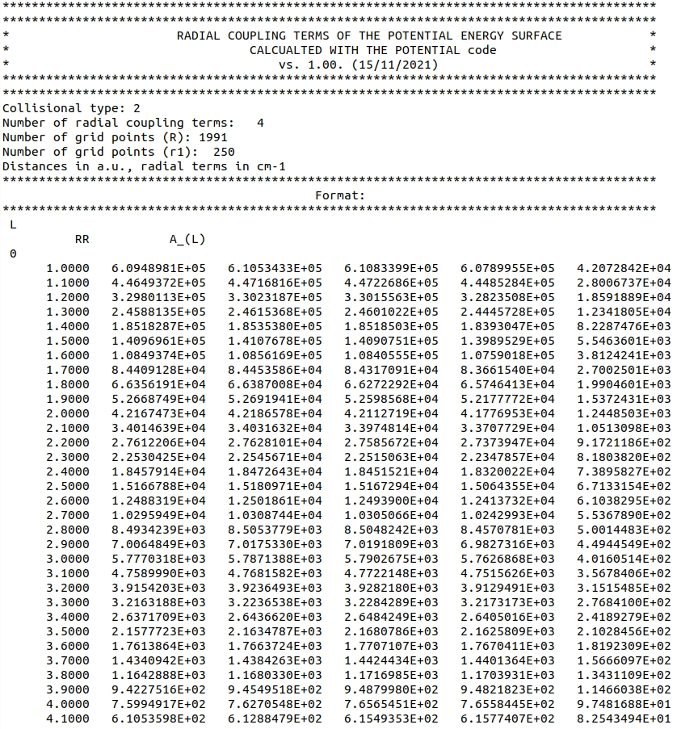

To avoid recompilation of the code whenever the radial coupling terms file is switched, we use a fixed format for radial coupling terms file. Below, we present a screenshot of the oH2-He-radialterms.dat file which can be found in the oH2-He-radialterms.zip archive in the ref directory:

The file starts with n_skip_lines = 17 lines which describe the file and are ignored by the code. The reading procedure is continued using two loops: the first one over nterms (number of radial terms, which match the size of l1tab), and the second one overnr (the number of points on the \( R \)-grid).
The code assumes that each loop over nterms begins with a current value of} \( \lambda \), and that the radial coupling terms are ordered in columns, where the first column corresponds to the \( R \)-grid. Additional loop over total_number_of_coupling_terms reads radial terms which couple different \( v, j \) and \( v', j' \) states.
The order of columns in the radial terms file corresponds to the values supplied in the v1pes, j1pes, v1ppes, j1ppes arrays in the input file.
The user can supply a larger set of terms that describe the coupling between different rovibrational states (\( v, j \) and \( v', j' \) ) than needed.
This is exactly the case here, as some of the terms in this file describe coupling off-diagonal with \(v\), although the corresponding input file
involves only three rotational levels from the \(v=0\) manifold.
If this is the case, the reduce_radial_coupling_terms subroutine from radial_coupling_terms_mod module picks only the necessary terms, i.e. terms that describe couplings between all levels in the rovibrational basis set.
Note that the procedure will be skipped if total_number_of_coupling_terms \( <= \) nlevel \( \cdot \) (nlevel+1)\(/2\).